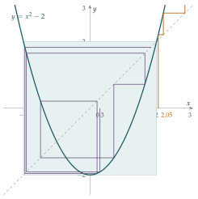

STEP III 2021, 문제 8
다음으로 넘어가기 전에 문제를 먼저 읽어 보자. 이 문제는 OCR에서 내려받을 수 있는 2021년 STEP 문제지 모음(zip 파일)의 STEP III 문제지에 있다: www.ocr.org.uk/Images/696588-2021-past-papers.zip
도입
“제곱하고 2를 뺀다”는 수열(sequence)을 만들어 내는 규칙 가운데 거의 가장 단순한 것이다. 그런데도 이 규칙은 실수직선을 두 세계로 나눈다. \([-2, 2]\) 바깥에서 시작하면 수들은 지수적인 속도보다도 빠르게 무한대로 폭발한다. 안쪽에서 시작하면 수들은 영원히 그 안에 갇혀 있으면서, 정확한 의미에서 완전히 예측할 수 없는 방식으로 떠돈다. 이것은 혼돈(chaos)의 가장 단순한 예 가운데 하나이다.
같은 규칙을 아주 큰 정수로 수행하면, 메르센 수(Mersenne number) \(2^p - 1\)이 소수(prime)인지 효율적으로 판정하는 뤼카–레머 판정법(Lucas–Lehmer test)의 엔진이 된다. 이 판정법으로 현재의 최대 소수 기록과, 알려진 가장 큰 소수들 대부분이 발견되었다. 이 문제는 이야기의 탈출하는 쪽을 탐구하고, 수열을 완전히 풀 수 있게 해 주는 숨은 공식을 찾아낸다.
시작하기 전에
몇 가지 시작값을 넣어 보자. \(a = 3\)이면 \(3, 7, 47, 2207, \ldots\)이다. \(a = 1\)이면 \(1, -1, -1, -1, \ldots\)이다. \(a = 0\)이면 \(0, -2, 2, 2, 2, \ldots\)이다. \(a = 0.3\)이면 \(0.3, -1.91, 1.648, 0.716, -1.487, 0.211, \ldots\)이다.
\([-2, 2]\) 안의 수는 왜 결코 탈출하지 못할까? \(-2 \leq x \leq 2\)일 때 \(x^2 - 2\)의 최댓값과 최솟값은 무엇인가?
\(-2 \leq x \leq 2\)이면 \(0 \leq x^2 \leq 4\)이므로 \(-2 \leq x^2 - 2 \leq 2\)이다. 구간 \([-2, 2]\)는 자기 자신 안으로 보내진다. 이것이 소문항 (ii)의 절반이 될 것이다.
차근차근 풀기
단계 1 탈출
소문항 (i)에는 \(4^{n-1}\)이 들어 있는데, 이는 \(2\) 위로 떨어진 거리가 매 단계 적어도 네 배가 된다는 것을 암시한다. \(x_n = 2 + d\)라 하자. \(x_{n+1}\)을 \(d\)로 나타내면 무엇인가?
\(x_{n+1} = (2 + d)^2 - 2 = 2 + 4d + d^2\)이다. 따라서 \(d \geq 0\)이면 \(2\) 위로 떨어진 새 거리는 \(4d + d^2 \geq 4d\)이다.
이제 수학적 귀납법(induction)을 쓴다. \(n = 1\)일 때 \(x_1 = a = 2 + 4^0(a - 2)\)이다. \(x_n \geq 2 + 4^{n-1}(a - 2)\)이면 \(d = x_n - 2 \geq 4^{n-1}(a - 2) \geq 0\)이므로 \[x_{n+1} - 2 \geq 4d \geq 4^n (a - 2). \qed\]
단계 2 \(|a| > 2\)일 때, 그리고 그때에만 탈출한다
“필요충분조건(if and only if)”은 두 개의 별도 증명을 뜻한다. 소문항 (i)이 거의 주는 것은 어느 방향이며, 무엇이 빠져 있는가?
\(|a| > 2\)이면: \(a > 2\)일 때는 소문항 (i)에 의해 \(x_n \geq 2 + 4^{n-1}(a - 2) \to \infty\)이다. \(a < -2\)일 때는 첫 단계에서 부호가 정해진다. \(x_2 = a^2 - 2 > 4 - 2 = 2\)이고, \(x_2\)부터의 수열은 \(x_2 > 2\)에서 시작한 같은 수열이므로 무한대로 발산한다.
역으로: \(|a| \leq 2\)이면 \(a \in [-2, 2]\)이고, 앞의 관찰에 의해 모든 항이 \([-2, 2]\) 안에 머문다. 유계(bounded)인 수열은 무한대로 발산할 수 없다.■
단계 3 숨은 공식
소문항 (iii)은 만만치 않아 보인다. 이 문항에 도전하기 전에 \(x_n\)에 대한 공식을 찾아 두는 것이 좋다.
\(a > 2\)이면 \(a = t + \dfrac1t\)인 수 \(t > 1\)이 존재한다. (왜 그런가?) \(x_2\)와 \(x_3\)를 \(t\)로 나타내면 무엇인가?
함수 \(t + 1/t\)는 \(t\)가 \(1\)에서 \(\infty\)로 갈 때 \(2\)에서 \(\infty\)까지 증가하므로, 모든 \(a > 2\)를 이런 꼴로 쓸 수 있다. 그러면 \[x_2 = \left(t + \frac1t\right)^2 - 2 = t^2 + \frac{1}{t^2}, \qquad x_3 = \left(t^2 + \frac1{t^2}\right)^2 - 2 = t^4 + \frac1{t^4},\] 이고, 귀납법에 의해 \[x_n = t^{2^{n-1}} + t^{-2^{n-1}}.\] 제곱하고 \(2\)를 빼는 것은 단지 지수를 두 배로 만드는 일이다. 이제 문제를 다룰 수 있게 되었다.
단계 4 곱이 연쇄적으로 소거된다
\(\left(t - \frac1t\right)\left(t + \frac1t\right)\)는 무엇인가? 그 결과에 \(t^2 + \frac1{t^2}\)을 곱하면 어떻게 되는가?
\(\left(t - \frac1t\right)\left(t + \frac1t\right) = t^2 - \frac1{t^2}\)이고, 다음으로 \(\left(t^2 - \frac1{t^2}\right)\left(t^2 + \frac1{t^2}\right) = t^4 - \frac1{t^4}\)이며, 이런 식으로 계속된다. 각 인수 \(x_k\)는 두 거듭제곱의 차에서 지수를 두 배로 만든다. 따라서 \[\left(t - \frac1t\right) x_1 x_2 \cdots x_n = t^{2^n} - t^{-2^n}.\]
\(x_{n+1}^2 - 4\)를 \(t\)로 계산하고, 위의 곱과 비교해 보라.
\[x_{n+1}^2 - 4 = \left(t^{2^n} + t^{-2^n}\right)^2 - 4 = \left(t^{2^n} - t^{-2^n}\right)^2.\] \(t > 1\)이므로 \(t^{2^n} - t^{-2^n} > 0\)이고, 따라서 \(\sqrt{x_{n+1}^2 - 4} = t^{2^n} - t^{-2^n} = \left(t - \frac1t\right) x_1 x_2 \cdots x_n\)이다. 그러므로 \[\frac{\sqrt{x_{n+1}^2 - 4}}{x_{n+1}} = \frac{\left(t - \frac1t\right) x_1 \cdots x_n}{x_{n+1}},\] 이고, 이것이 모든 \(n\)에 대하여 \(y_n\)과 같을 필요충분조건은 \(A = t - \frac1t\)이다. 마지막으로 \(\left(t - \frac1t\right)^2 = \left(t + \frac1t\right)^2 - 4 = a^2 - 4\)이므로 조건은 \(A = \sqrt{a^2 - 4}\), 즉 \[a = \sqrt{A^2 + 4}.\] (\(A > 0\)이므로 이 값은 요구대로 \(2\)보다 크다.)■
단계 5 \(y_n\)은 수렴하는가?
이 \(a\)의 값에 대하여 \[y_n = \frac{\sqrt{x_{n+1}^2 - 4}}{x_{n+1}} = \sqrt{1 - \frac{4}{x_{n+1}^2}}.\] 소문항 (ii)에 의해 \(x_{n+1} \to \infty\)이므로 \(\frac{4}{x_{n+1}^2} \to 0\)이고 \(y_n \to 1\)이다. 이 수열은 \(1\)로 수렴(converge)한다.■
따라서 무한곱(infinite product) \(x_1 x_2 x_3 \cdots\)는 정확히 \(x_{n+1}/A\)와 같은 속도로 커진다. 빠르게 커지는 항들의 곱이 얼마나 빨리 커지는지를 정확히 알아낸 것이다.
돌아보기
불변 영역(invariant region). \([-2, 2]\)는 자기 자신 안으로 보내지며, 이 한 가지 사실이 소문항 (ii)의 절반을 해결한다.
선형화하는(linearise) 치환. \(a = t + 1/t\)로 놓으니 “제곱하고 \(2\)를 빼기”가 “지수를 두 배로 만들기”로 바뀌었다. 복잡한 비선형 거동이 단순해졌다.
다시 연쇄 소거(telescoping). 2.5 절의 곱에서처럼, 각 인수가 다음 인수와 맞물리기 때문에 많은 인수의 곱이 간단히 줄어들었다.
숨은 수학
\([-2, 2]\) 안에서는 무슨 일이 일어날까? 거기서는 \(a = t + 1/t\)가 통하지 않지만(\(|a| \geq 2\)가 필요하다), 삼각함수 버전이 통한다. \(a = 2\cos\theta\)라 하자. 그러면 \(x_2 = 4\cos^2\theta - 2 = 2\cos 2\theta\)이고, 일반적으로 \[x_n = 2\cos\bigl(2^{n-1}\theta\bigr).\] 따라서 구간 안에서 이 사상은 단지 각을 두 배로 만든다. 해롭지 않게 들리지만, 각을 두 배로 만드는 것은 혼돈적이다. \(\theta/\pi\)를 이진법(binary)으로 써 보자. 두 배로 만들면 소수점이 오른쪽으로 한 자리 이동하면서 맨 앞자리 숫자가 버려진다. \(50\)단계 뒤에 \(x_n\)은 \(\theta/\pi\)의 이진 전개에서 \(51\)번째 자리 숫자에 의존하므로, 시작값에 \(10^{-15}\)(보통 컴퓨터의 정밀도)만큼의 오차가 있으면 \(50\)단계 뒤의 답은 전혀 믿을 수 없게 된다. 이러한 초기 조건에 대한 민감한 의존성(sensitive dependence on initial conditions)이 혼돈의 특징이며, 그림 2.8.1에 나타나 있다. 사상 \(x \mapsto x^2 - 2\)는 변수를 바꾸면 유명한 로지스틱 사상(logistic map) \(x \mapsto 4x(1 - x)\)와 동등하며, 이 사상은 8.7 절에서 다시 만난다.

가장 큰 소수 찾기
메르센 수는 \(M_p = 2^p - 1\)이다. 1876년에 에두아르 뤼카(Édouard Lucas)가 발견하고 1930년에 데릭 레머(Derrick Lehmer)가 완성한, \(M_p\)가 소수인지(\(p\)가 홀수인 소수일 때) 판정하는 놀라운 방법이 있다. \(s_0 = 4\)에서 시작하여 제곱하고 \(2\)를 빼는 일을 되풀이하되, 매번 \(M_p\)를 법으로 하여 줄인다. 그러면 \[M_p \text{는 소수} \iff s_{p-2} \equiv 0 \pmod{M_p}.\] \(M_7 = 127\)의 경우 \(s = 4, 14, 194 \equiv 67, 67^2 - 2 \equiv 42, 42^2 - 2 \equiv 111, 111^2 - 2 \equiv 0\)이므로 \(127\)은 소수이다. 이 문제와의 연결 고리는 치환이다. \(t = 2 + \sqrt3\)으로 두면 \(4 = t + 1/t\)이므로 \(s_k = (2+\sqrt3)^{2^k} + (2-\sqrt3)^{2^k}\)이고, 판정법의 증명에는 1.6 절의 가우스 정수(Gaussian integers)와 비슷한 \(a + b\sqrt3\) 꼴의 수의 산술이 쓰인다. 각 단계에 제곱 한 번만 필요하므로 이 판정법은 매우 빠르며, 그래서 현재의 기록 보유자를 포함하여 알려진 가장 큰 소수들 대부분이 메르센 소수이다(모두가 그런 것은 아니다. \(a^{2^n} + 1\)과 같은 다른 특수한 꼴에도 그 나름의 빠른 판정법이 있다). 이 글을 쓰는 시점의 기록은 2024년에 발견된 \(2^{136279841} - 1\)로, \(41\)백만 자리가 넘는 수이다.
망델브로 집합
\(-2\)를 임의의 상수 \(c\)로 바꾸고 복소수를 허용하자: \(z \mapsto z^2 + c\). \(0\)의 궤도가 유계로 남는 \(c\)들의 집합이 망델브로 집합(Mandelbrot set)이다. 우리의 사상은 \(c = -2\)로, 망델브로 집합의 가장 왼쪽 점이며, 궤도가 유계로 남는 시작값들의 집합(이 사상의 쥘리아 집합(Julia set))은 바로 소문항 (ii)에서 찾은 구간 \([-2, 2]\)이다. 거의 모든 다른 \(c\)에 대해서는 이 집합이 프랙털(fractal)이 된다.
사고 기술
반복 과정이 복잡해 보이면, 그것을 두 배로 만들기나 상수 더하기처럼 단순한 것으로 바꾸어 주는 치환을 찾아보라.
여기서는 \(x = t + 1/t\)와 \(x = 2\cos\theta\)가 \(x \mapsto x^2 - 2\)를 두 배로 만들기로 바꾸었다. 동역학계(dynamical systems) 이론에서는 이것을 켤레(conjugacy)라 부르며, 이를 찾는 것이 계를 완전히 이해하는 열쇠가 되는 경우가 많다.
더 도전하기
구간 안에서. \(a = 2\cos\theta\)이면 \(x_n = 2\cos(2^{n-1}\theta)\)임을 증명하라. \(x_3 = a\)이지만 \(x_2 \neq a\)인 \(a\)의 값을 모두 구하라. (힌트: \(2\pi\)를 법으로 하여 \(4\theta \equiv \pm\theta\)가 되기를 원한다.)
손으로 하는 뤼카–레머 판정. 판정법을 이용하여 \(M_5 = 31\)은 소수이고 \(M_{11} = 2047\)은 소수가 아님을 보여라. (\(M_{11}\)에는 아홉 단계가 필요하며, 계산기가 도움이 된다. \(2047\)을 인수분해하여 결론을 확인하라.)
구체적인 예. \(A = \frac{3}{2}\)로 두자. \(a\)와 \(t\)를 구하고, 공식 \(y_1 = \sqrt{x_2^2 - 4}/x_2\)를 수치로 확인하라.
연쇄 소거되는 합. 심화 \(a = t + 1/t\)이고 \(t > 1\)일 때 \[\frac{1}{x_1 x_2 \cdots x_n} = \frac{t - t^{-1}}{t^{2^n} - t^{-2^n}}.\] 임을 보여라. 항등식 \(\dfrac{1}{z - 1} - \dfrac{1}{z^2 - 1} = \dfrac{z}{z^2 - 1}\)에 \(z = t^{2^n}\)을 넣어 다음을 유도하라. \[\frac{1}{x_1} + \frac{1}{x_1 x_2} + \frac{1}{x_1 x_2 x_3} + \cdots = \frac1t.\] \(a = 3\)일 때 이를 수치로 확인하라.
더 읽을거리
Ian Stewart, Does God Play Dice? (Penguin). 로지스틱 사상을 포함하여 혼돈을 다룬 고전적인 대중서이다.
Steven Strogatz, Nonlinear Dynamics and Chaos (CRC Press). 표준적인 학부 입문서이며, 10장은 이와 같은 1차원 사상을 다룬다.
Marcus du Sautoy, The Music of the Primes (Fourth Estate). 메르센 소수를 찾는 이야기가 담겨 있다.